amoCRM
Сводка по работе со сделками, этапами, примечаниями и задачами — материалы из других дней онбординга собраны здесь в одном месте.
amoCRM — основная CRM для работы с клиентами. В ней ведутся сделки, фиксируется переписка и звонки, проставляются этапы воронки, создаются примечания и задачи.
Нажмите на раздел, чтобы открыть инструкцию
Обычно мы работаем из воронки «Продажи».
Чтобы открыть её, нужно слева навести курсор на вкладку «Сделки» и в открывшемся окне выбрать воронку «Продажи».
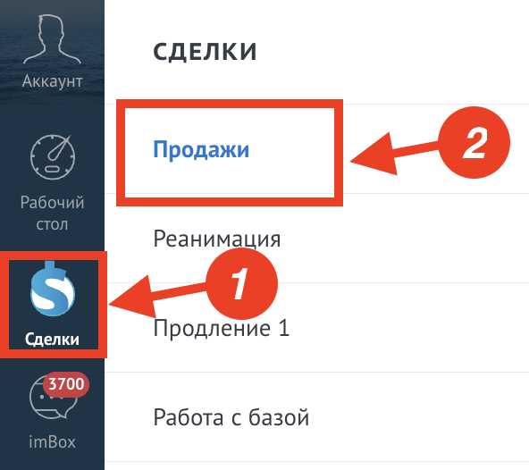
Чтобы открыть только свои сделки:
- Нажмите вверху на поле «Поиск и фильтр»;
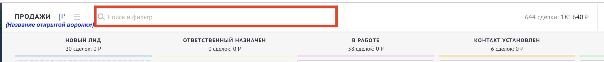
- В открывшемся окне выберите «Только мои сделки».
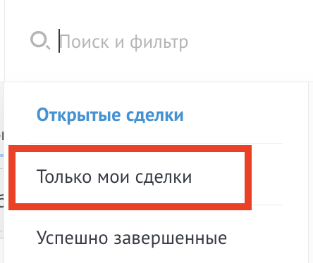
Чтобы открыть одновременно сделки и свои, и напарника:
- Нажмите вверху на поле «Поиск и фильтр»;
- В открывшемся окне найдите поле «Менеджеры», нажмите на него и выберите нужных менеджеров (себя и напарника).
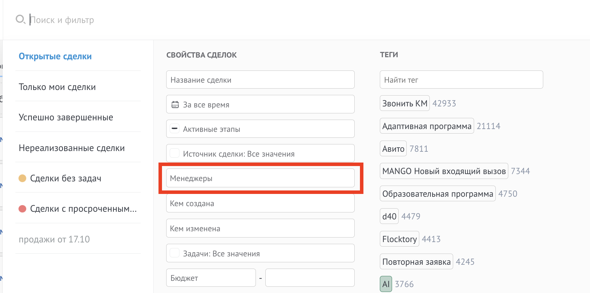
Чтобы найти клиента — нажмите на «Поиск и фильтр».
Клиента в АМО можно найти по любой информации, которая есть в сделке:
- номер телефона;
- электронная почта;
- ID сделки;
- фамилия и имя клиента;
- ник клиента в ТГ.
Нажмите на этап, чтобы открыть описание
- Описание этапа
Все поступающие новые лиды в воронку.
- Задача сотрудника
Все лиды автоматизированы и автоматически переходят в этап «Ответственный назначен».
- Что происходит в сделке автоматически
При создании сделки в этапе заполняются: имя, e-mail, телефон. Все сделки, кроме Авито, автоматически переходят в этап «Ответственный назначен».
Для Авито работает бот, который выясняет первичную информацию — например, номер телефона — и затем передаёт сделку в этап «Ответственный назначен».
- Что требуется заполнить сотруднику
Если сделку создаёт Квалификатор, заполнить:
- имя и фамилию;
- номер телефона;
- e-mail;
- тип сделки.
- Условия перехода в следующий этап
—
- Распределение звонков
Звонок проходит на всех, кто на смене и не на линии.
- Распределение сообщений из мессенджеров
На админа падают задачи, пока ответственный не сменён.
- Описание этапа
Все новые клиенты, которых нужно отработать.
- Задача сотрудника
Забрать сделку, которая назначена на сотрудника, и перевести её в этап «В работе».
- Что происходит в сделке автоматически
Назначение ответственного и установка задачи «Новый лид» на ответственного.
Назначение происходит в порядке электронной очереди на тех сотрудников, которые находятся на смене и имеют статус «Онлайн» в виджете «Распределение».
- Что требуется заполнить сотруднику
—
- Условия перехода в следующий этап
—
- Распределение звонков
На ответственного Квалификатора.
- Распределение сообщений из мессенджеров
На ответственного Квалификатора.
- Описание этапа
Все клиенты, с которыми на текущий момент не получилось связаться.
- Задача сотрудника
- Попытаться дозвониться до клиента согласно цепочке касаний.
- Перевести в следующий этап в зависимости от исхода звонка:
- если не получилось — остаётся в текущем этапе;
- если клиент ответил, но неудобно говорить / попросил перезвонить / предпочёл переписку — в «Контакт установлен»;
- если поговорили, выявили потребность, сделали презентацию, но не записали на урок (например, нет слотов) — в «Квалифицирован»;
- если поговорили и записали на ВУ / СВУ — в «Передан в подбор».
- Что происходит в сделке автоматически
Автозадача, если клиент в этапе дольше 3 дней.
- Что требуется заполнить сотруднику
Поля, которые знаем:
- фамилия (если не заполнена);
- город, страна;
- программа, текущий / целевой уровень, длительность урока, пожелания по обучению, дни недели для уроков, дата и время ВУ;
- возраст, пол;
- удобный вид связи.
- Условия перехода в следующий этап
- «В работе» — если не вышел на связь.
- «Контакт установлен» — если ответил хотя бы раз.
- «Квалифицирован» — если выявили потребности, но не записали на урок.
- «Передан в подбор» — собрана вся информация, записано время пробного урока, заполнены обязательные поля.
- Распределение звонков
На ответственного Квалификатора.
- Распределение сообщений из мессенджеров
На ответственного Квалификатора.
- Описание этапа
Все клиенты, которые вышли на связь, но не получилось их квалифицировать (сделать выявление потребностей).
- Задача сотрудника
- Выявление потребности.
- Сбор пожеланий к преподавателю.
- Запись удобного времени для дальнейшего обучения.
- Что происходит в сделке автоматически
Автозадача, если клиент в этапе дольше 3 дней.
- Что требуется заполнить сотруднику
Дозаполняем поля, если что-то узнали:
- фамилия (если не заполнена);
- город, страна;
- программа, текущий / целевой уровень, длительность урока, пожелания по обучению, дни недели для уроков, дата и время ВУ;
- возраст, пол;
- удобный вид связи.
- Условия перехода в следующий этап
В случае записи на ВУ / СВУ: собрана информация о пожеланиях клиента и записано желательное время для пробного урока и для дальнейшего обучения. Заполнены все обязательные поля.
- Распределение звонков
На ответственного Квалификатора.
- Распределение сообщений из мессенджеров
На ответственного Квалификатора.
- Описание этапа
Все клиенты, которых получилось квалифицировать, но не удалось сделать презентацию школы и вводного урока или записать на ВУ / СВУ.
- Задача сотрудника
- Презентация школы и вводного урока.
- Передать клиента в подбор, передвинув сделку в следующий этап.
- Что происходит в сделке автоматически
Автозадача, если клиент в этапе дольше 3 дней.
- Что требуется заполнить сотруднику
Дозаполняем поля, если что-то узнали:
- фамилия (если не заполнена);
- город, страна;
- программа, текущий / целевой уровень, длительность урока, пожелания по обучению, дни недели для уроков, дата и время ВУ;
- возраст, пол;
- удобный вид связи.
- Условия перехода в следующий этап
В случае записи на ВУ / СВУ: собрана информация о пожеланиях клиента и записано желательное время для пробного урока и для дальнейшего обучения. Заполнены все обязательные поля.
- Распределение звонков
На ответственного Квалификатора.
- Распределение сообщений из мессенджеров
На ответственного Квалификатора.
- Описание этапа
В этот этап переводят сделки Квалификаторы при записи на ВУ/СВУ. Тут находятся все недавно записанные на ВУ/СВУ клиенты и клиенты, которым пока не подобрали преподавателя.
- Задача сотрудника
- В случае ВУ: связаться с клиентом и подобрать преподавателя, назначить расписание в ЛК.
- В случае СВУ: ничего делать не нужно.
- Что происходит в сделке автоматически
В этом этапе работает распределение с Квалификаторов на Координаторов. При назначении ответственного Координатора устанавливается ответственный в ЛК. После распределения на Координатора, если нужен ВУ и подбор преподавателя — ставится задача.
- В случае ВУ: при составлении расписания в ЛК сделка автоматически сменит этап на «Записан на ВУ», задача не ставится.
- В случае СВУ: сделка автоматически при автоназначении переходит в следующий этап «Записан на ВУ», задача не ставится.
- Что требуется заполнить сотруднику
В случае ВУ: подобрать преподавателя, создать расписание и поставить дату и время ВУ в ЛК.
- Условия перехода в следующий этап
В случае ВУ: подобран преподаватель, создано расписание, назначен вводный урок.
- Распределение звонков
На ответственного Координатора.
- Распределение сообщений из мессенджеров
На ответственного Координатора.
- Описание этапа
Клиент, записанный на СВУ, либо клиент, прошедший этап подбора преподавателя:
- те, кто не подтвердил своё присутствие в автозвонке;
- те, у кого ещё не было автозвонка.
- Задача сотрудника
Проконтролировать выход клиентов на ВУ/СВУ.
- Что происходит в сделке автоматически
В сделку передаётся из ЛК:
- дата и время назначенного ВУ;
- ФИ препода;
- в случае переназначения — новые данные о дате и преподе ВУ;
- комментарии менеджера подбора о клиенте (в виде примечания), его пожелания к обучению и другие пометки.
Если клиент подтвердил присутствие — заполняется поле и сделка двигается дальше в «Подтвердил ВУ», висит без задачи.
Если клиент не ответил на автозвонок — ставится задача «ВУ — не ответил на автозвонок», координатору нужно позвонить клиенту и получить подтверждение.
Если клиент в автозвонке нажал «2» — сделка автоматически переводится в этап «Отказ ВУ» и ставится задача менеджеру.
- Что требуется заполнить сотруднику
—
- Условия перехода в следующий этап
- ВУ/СВУ прошёл успешно, других ВУ не назначено — в этап «Посетил ВУ».
- ВУ/СВУ прошёл не успешно, связывается также Координатор — в этап «Отказ ВУ».
- Распределение звонков
На ответственного Координатора.
- Распределение сообщений из мессенджеров
На ответственного Координатора.
- Описание этапа
Клиенты, подтвердившие присутствие на ВУ в автозвонке.
- Задача сотрудника
Проконтролировать выход клиентов на ВУ/СВУ.
- Что происходит в сделке автоматически
- Если клиент посетил ВУ/СВУ — сделка уйдёт дальше в «Посетил ВУ».
- Если клиент не посетил или отменил ВУ/СВУ — сделка уйдёт в «Отказ ВУ» и поставится задача менеджеру.
- Что требуется заполнить сотруднику
—
- Условия перехода в следующий этап
- ВУ/СВУ прошёл успешно, других ВУ не назначено — в этап «Посетил ВУ».
- ВУ/СВУ прошёл не успешно, связывается также Координатор — в этап «Отказ ВУ».
- Распределение звонков
На ответственного Координатора.
- Распределение сообщений из мессенджеров
На ответственного Координатора.
- Описание этапа
Клиенты, не посетившие ВУ/СВУ.
- Задача сотрудника
Пытаться связаться с клиентом согласно цепочке касаний. Предложить перезаписаться на более удобные день/время.
- Что происходит в сделке автоматически
Если данная сделка уже однажды была в этом этапе — сделка автоматически из того этапа уйдёт в «Закрыто и нереализовано».
- Что требуется заполнить сотруднику
- В случае отказа и перевода сделки в ЗИН — заполнить поле «Причина отказа».
- В случае перезаписи — поставить в ЛК расписание и дату и время ВУ.
- Условия перехода в следующий этап
- Клиент отказался от посещения ВУ/СВУ — в «Закрыто и нереализовано».
- Клиент перезаписан — в «Записан на ВУ».
- Распределение звонков
На ответственного Координатора.
- Распределение сообщений из мессенджеров
На ответственного Координатора.
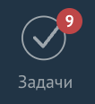
Чтобы открыть свои задачи — нужно слева выбрать вкладку «Задачи».
Нажмите на раздел, чтобы открыть инструкцию
- Нажмите на поле «Фильтр»;
- Выберите нужных менеджеров в поле ответственного (себя и напарника).
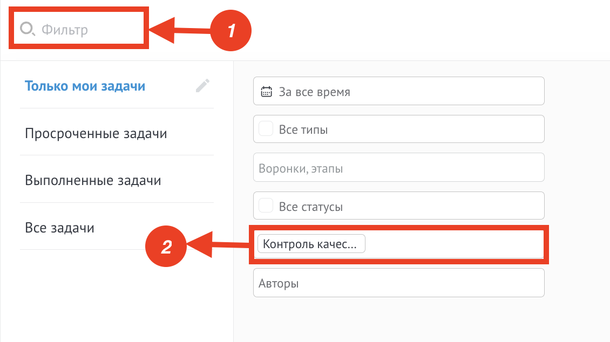
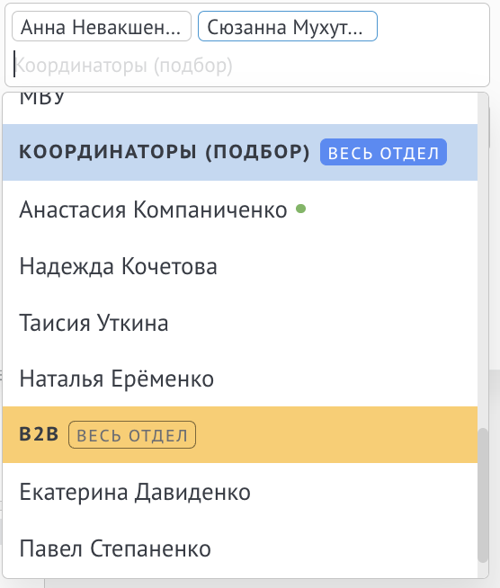
- Нажмите на поле «Фильтр»;
- Выберите нужный этап в поле «Воронки, этапы».
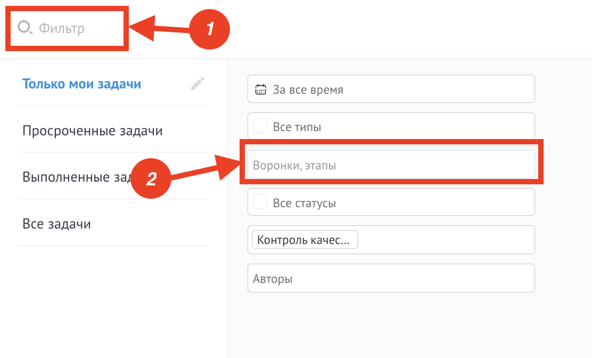
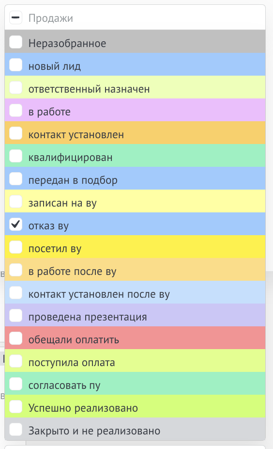
- Нажмите на поле «Фильтр»;
- Выберите нужный тип в поле «Все типы».
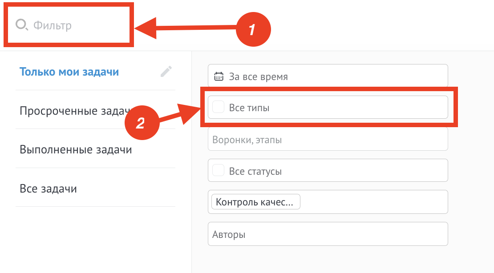
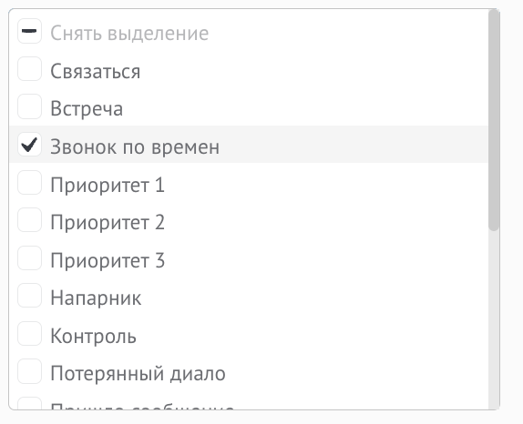
Чтобы написать клиенту на почту — нужно изначально зайти в сделку с этим клиентом.
Далее есть два способа:
-
Нажать в контакте на почту клиента и в открывшемся окне выбрать «Почтовик от „Команда F5"».
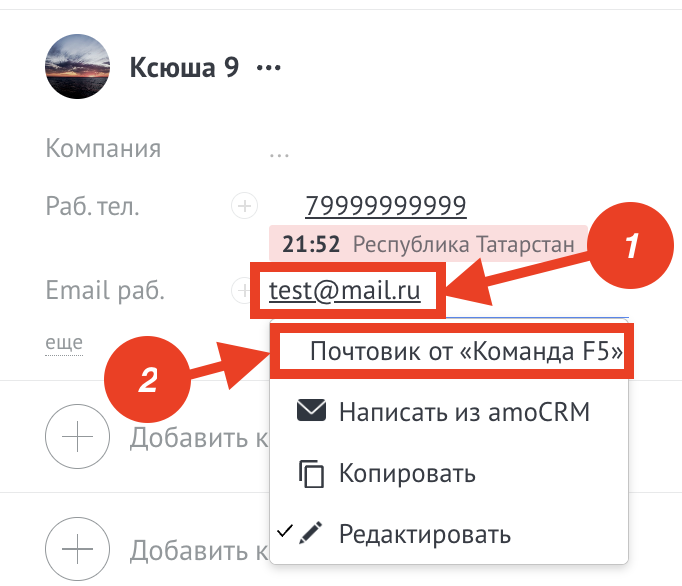
-
Справа в виджетах найти почтовик и нажать кнопку «Написать письмо».
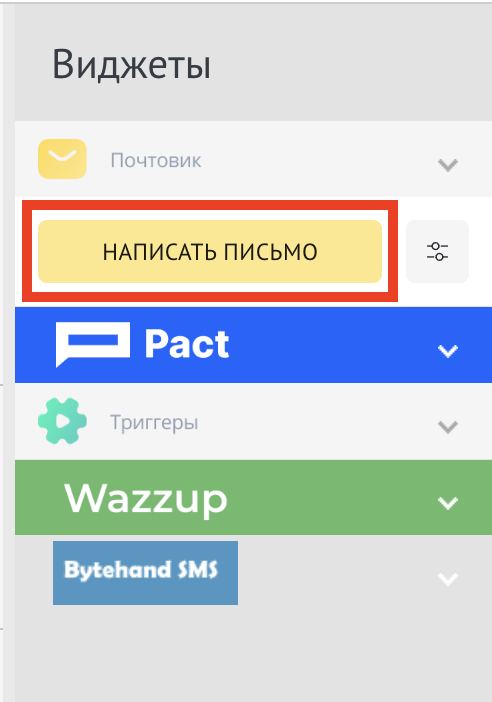
После этого откроется окно Почтовика.
В нём можно сразу написать письмо либо выбрать уже готовый шаблон из списка. Шаблон также можно найти по поиску, если вы знаете название подходящего вам шаблона. После того, как вы выбрали шаблон — текст в письме можно редактировать.
Перед отправкой письма можно посмотреть, как письмо будет выглядеть у клиента, нажав на значок глаза.
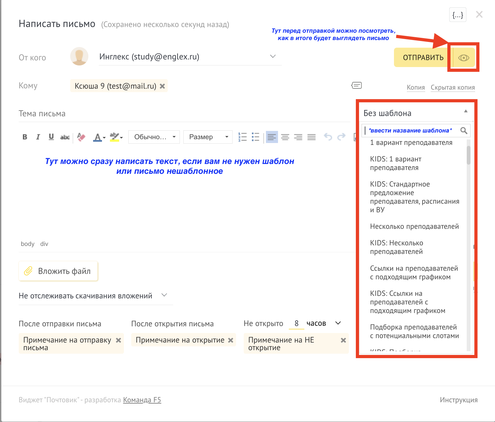
Чтобы написать клиенту в WhatsApp, нужно изначально открыть сделку с этим клиентом.
Есть три способа написать клиенту:
-
Справа выбрать виджет Pact.
- Выбираем мессенджер WABA;
- Компания — Инглекс (если изначально не выбрано);
- Выбираем нужный шаблон;
- Если в шаблоне есть пропуски — нужно их заполнить.
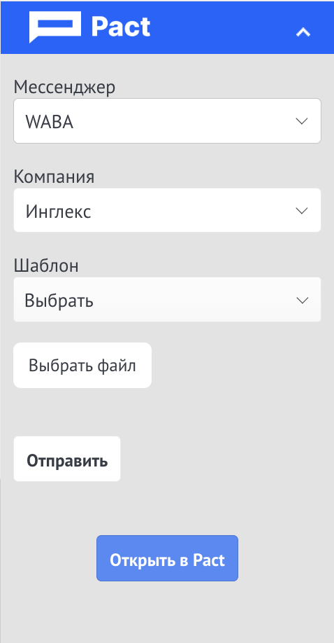
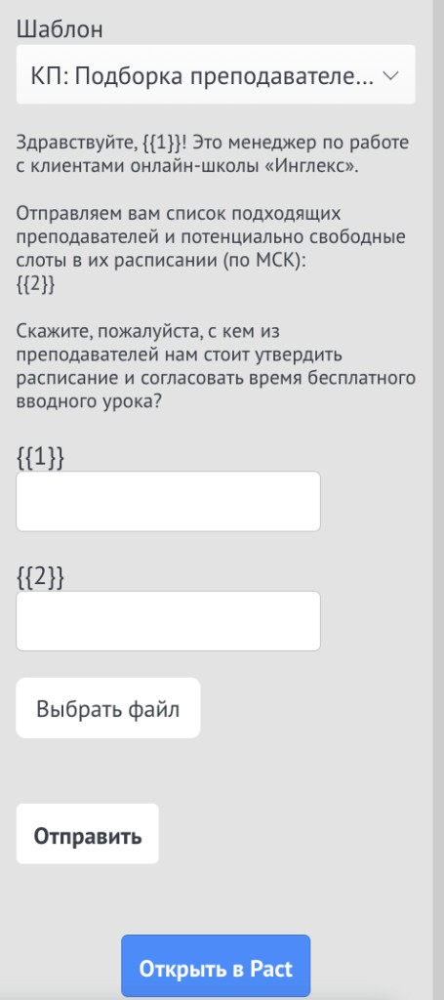
-
Нажать в контакте на номер телефона и в открывшемся окне выбрать «Инглекс (Pact WABA)».
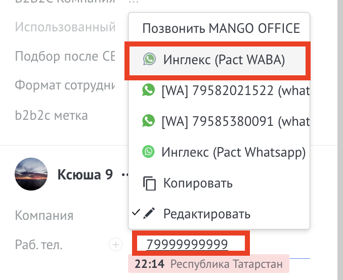
-
Если переписка с клиентом уже велась, можно нажать на зелёный текст с номером беседы рядом с перепиской.
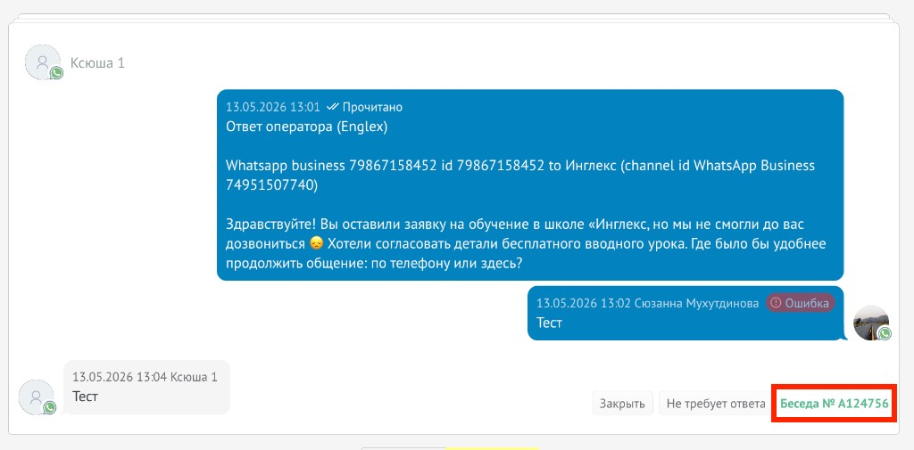
Чтобы отправить клиенту СМС, нужно изначально открыть сделку с клиентом.
После этого справа находим виджет «Bytehand SMS» и нажимаем на него.
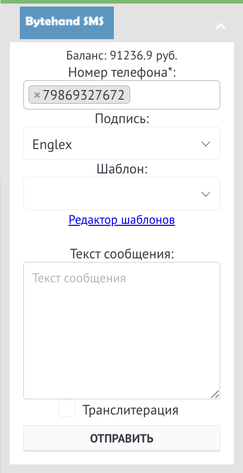
Отправлять можно только те шаблоны, которые уже есть.
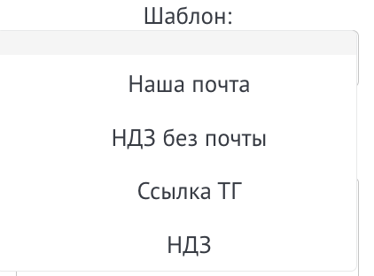
- Обновляйте примечания в amo на актуальные — так коллегам проще подхватить заявку, когда вы на выходном.
- Регулярно проверяйте все свои заявки, чтобы они не «провисали» с неактуальными статусами.
- При закрытии заявки из-за отсутствия связи со студентом не забывайте менять статус на «архивный» и отклонять заявку в ЛК.
В сделке в центральном поле можно добавить примечание. После добавления примечание также можно редактировать. Либо закрепить/открепить. При закрепе — примечание всегда будет сверху в сделке, чтобы его не потерять (если в нём указана важная информация, например).
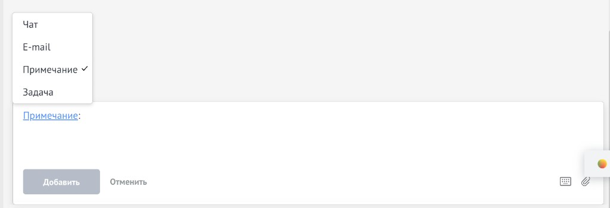
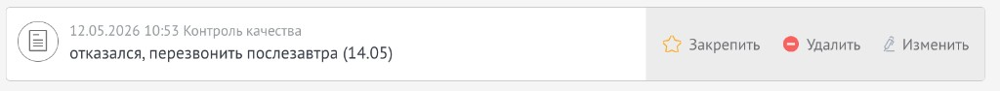
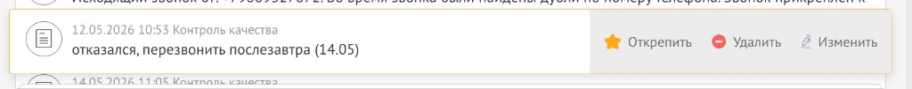
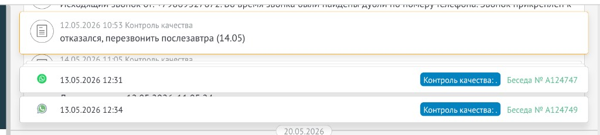
Какие задачи ставятся автоматически
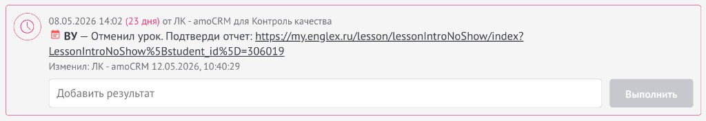
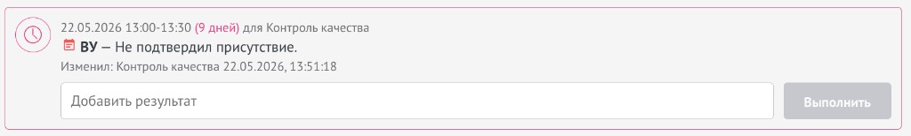
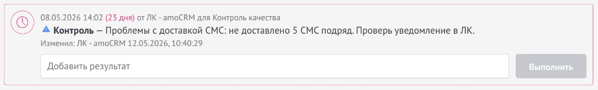
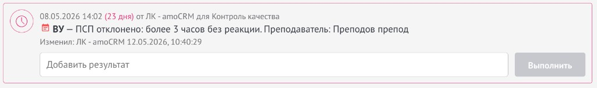
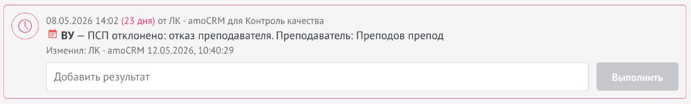
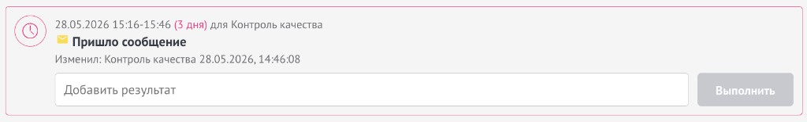
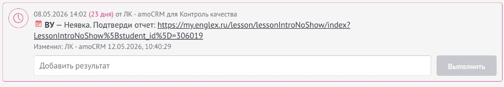
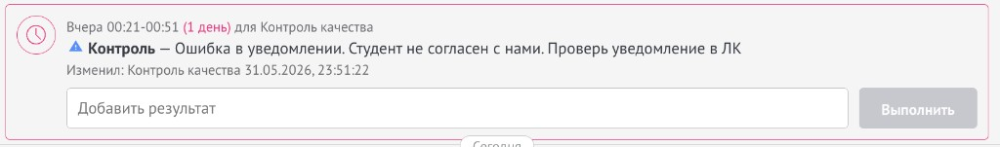
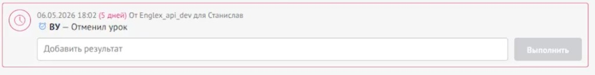
Развёрнутые материалы по amoCRM и связанным процессам — в других днях онбординга:
Совет: При проблемах с распределением в amo или некорректным начислением КПИ в ЛК — пишите в чат с IT в Пачке.